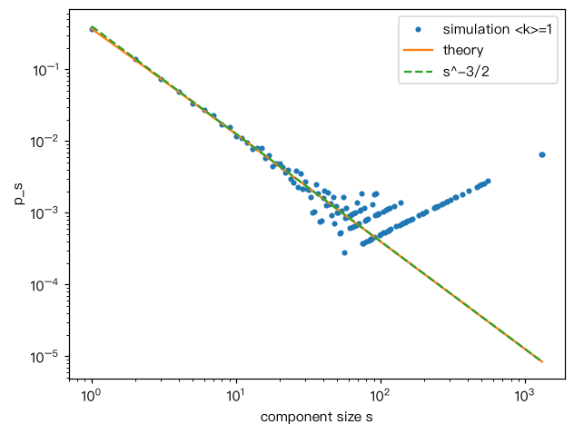

Example13 / 15
临界点处的分支大小分布 p_s ~ s^{-3/2}
在
Output输出图

Output文字输出
s= 1: 模拟 p_s=0.3680, 理论 0.3679 s= 2: 模拟 p_s=0.1374, 理论 0.1353 s= 3: 模拟 p_s=0.0735, 理论 0.0747 s= 5: 模拟 p_s=0.0333, 理论 0.0351 s=10: 模拟 p_s=0.0117, 理论 0.0125 <k>=0.5 平均分支大小（按节点计）= 1.996，理论 1/(1-<k>) = 2
Code代码
# 在 <k>=1 的 ER 网络中统计“随机选一个节点，它所在分支的大小为 s”的概率 p_s（去掉最大分支），
# 与理论 p_s = e^{-<k>s} (<k>s)^{s-1} / s! 对比；临界点处它按 s^{-3/2} 衰减。
# 同时给出 <k>=0.5 时的平均分支大小与理论值 1/(1-<k>) = 2 的比较。
# 输出：临界点处双对数图近似斜率 -3/2 的直线；亚临界时平均分支大小接近 2。
import networkx as nx
import numpy as np
import matplotlib.pyplot as plt
from scipy.special import gammaln
N = 200_000
def node_cluster_sizes(c, seed):
G = nx.fast_gnp_random_graph(N, c / (N - 1), seed=seed)
comps = sorted((len(cc) for cc in nx.connected_components(G)), reverse=True)
return comps
comps = node_cluster_sizes(1.0, 2)[1:] # 去掉最大分支
sizes, counts = np.unique(comps, return_counts=True)
p_s = sizes * counts / N # 节点所在分支大小为 s 的概率
theory = np.exp(-sizes * 1.0 + (sizes - 1) * np.log(sizes * 1.0) - gammaln(sizes + 1))
for s in [1, 2, 3, 5, 10]:
i = np.where(sizes == s)[0][0]
print("s=%2d: 模拟 p_s=%.4f, 理论 %.4f" % (s, p_s[i], theory[i]))
sub = node_cluster_sizes(0.5, 3)
print("<k>=0.5 平均分支大小（按节点计）= %.3f，理论 1/(1-<k>) = 2" % (np.sum(np.array(sub) ** 2) / N))
plt.loglog(sizes, p_s, "o", ms=3, label="simulation <k>=1")
plt.loglog(sizes, theory, "-", label="theory")
plt.loglog(sizes, 0.4 * sizes ** -1.5, "--", label="s^-3/2")
plt.xlabel("component size s")
plt.ylabel("p_s")
plt.legend()
plt.show()Run在浏览器中运行
首次加载 Python 环境约需 20–40 秒；可以修改参数后重新运行。